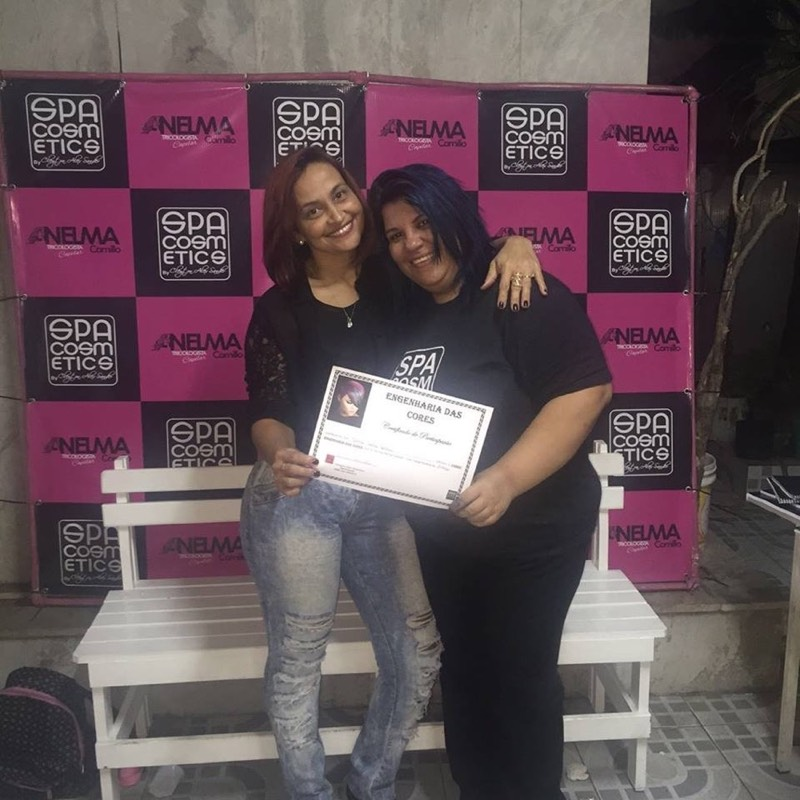
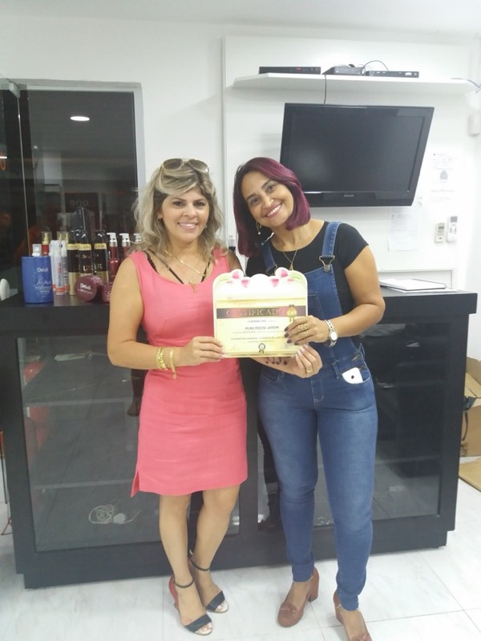
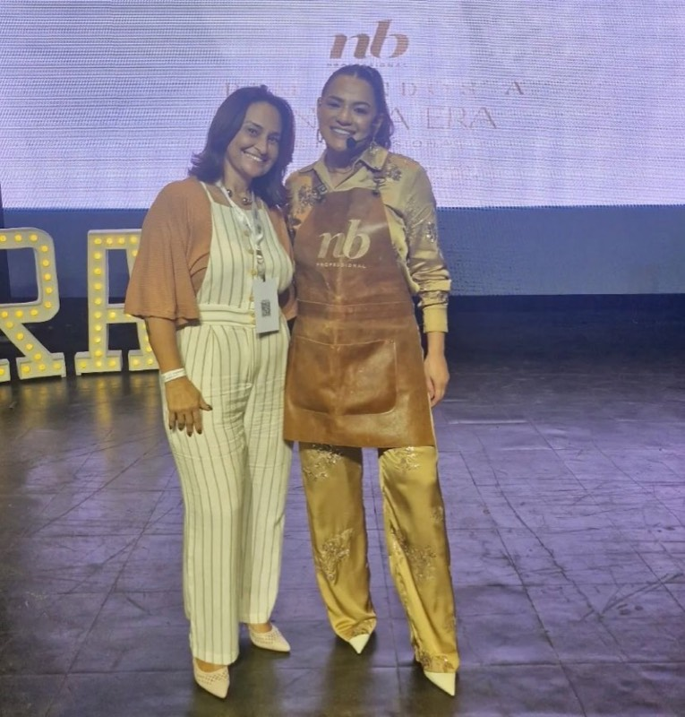
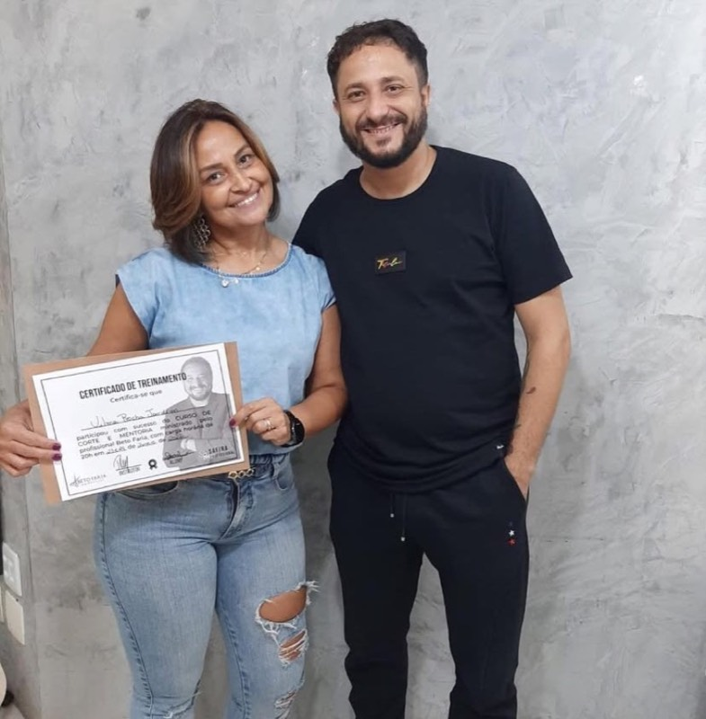
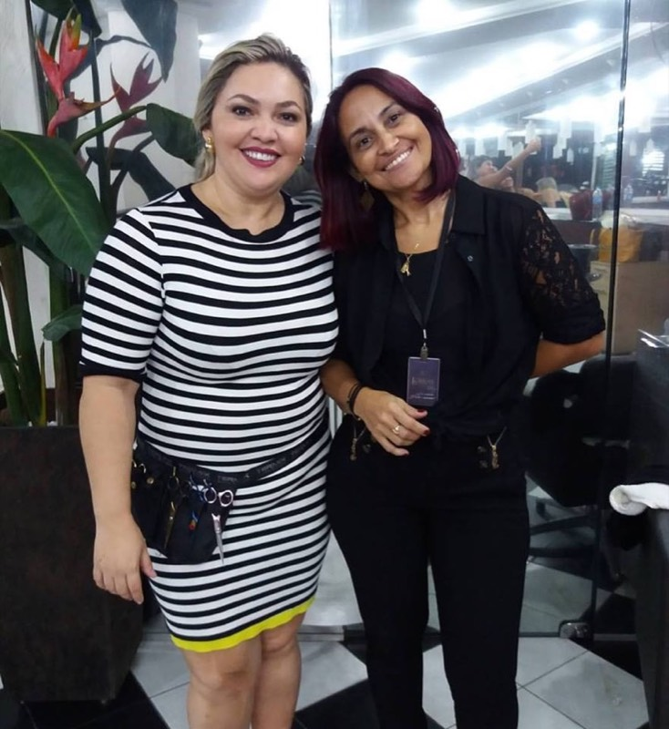
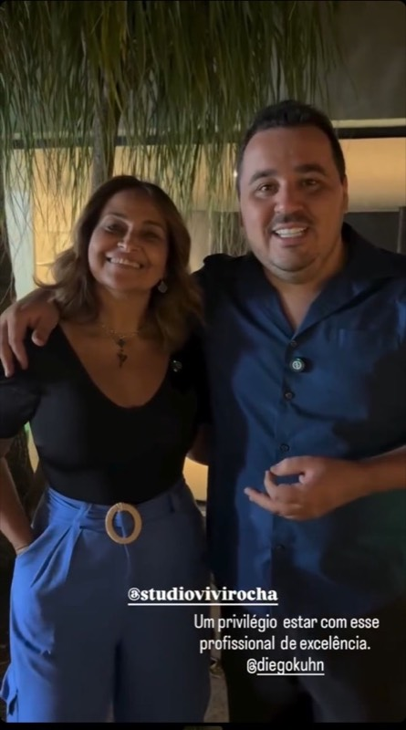
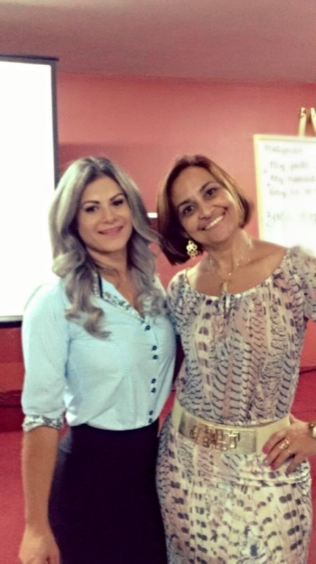

“Excelente atendimento! Estou gostando muito do resultado das luzes no meu cabelo. O cafezinho de cortesia estava muito gostoso. Meu marido ficou bastante à vontade esperando a finalização do serviço.”
Emilliend Gomes · ★★★★★ · Google
Praia Belo Jardim, 610 — Galeão
Ilha do Governador, Rio de Janeiro

Studio Vivi Rocha · Ilha do Governador
Vilma Rocha — a Vivi. Corte, colorimetria e terapia capilar no Galeão. Nenhuma química começa antes do teste de mecha.
Bem-vinda
Não como um antes e depois. São quinze anos de corte, colorimetria e terapia capilar no Galeão, atendendo com hora marcada, uma cliente por vez, para que cada serviço tenha o tempo que ele pede.
Sou a Vilma Rocha, mais conhecida como Vivi. Formada na área há mais de quinze anos, especialista em corte, colorimetria e terapia capilar — e ainda hoje aluna, porque colorimetria muda, produto muda, e quem para de estudar entrega o resultado do ano passado.
Minha paixão é poder valorizar sua beleza através de fios saudáveis, respeitando seu estilo e sua personalidade. Cada serviço é analisado, estudado e desenvolvido com muita técnica, produtos de alta qualidade e muito amor.
O studio fica no Galeão, na Ilha do Governador. O atendimento é com hora marcada — assim ninguém espera na fila e cada cabeça recebe o tempo que precisa.
Tem cafezinho de cortesia, e tem lugar confortável para quem veio te esperar. São detalhes pequenos, mas são eles que fazem uma manhã de salão parecer curta.
O método
O medo de quem vai clarear o cabelo é sempre o mesmo, e é físico: estragar o fio. Por isso a ordem aqui é essa, e não outra.
Antes de qualquer clareamento, testo uma mecha do seu cabelo. É o teste que diz o que o fio aguenta — e ele vem antes da conversa sobre tom.
Só depois do teste eu estudo qual tom combina com a sua cor de pele. Loiro bonito na foto e loiro bonito em você são coisas diferentes.
Terapia capilar entra junto da cor, não depois do estrago. Cuidar do couro cabeludo faz parte do serviço — não é venda adicional.

Mecha é o serviço que mais me procuram, e é também o que mais dá medo — com razão. Clarear é tirar pigmento do fio, e fio sem pigmento fica frágil quando o processo é feito com pressa.
Por isso o meu começa sempre no mesmo lugar: primeiro é feito o teste de mechas. Uma mecha do seu cabelo passa pelo processo antes de todo o resto, e é ela que responde o que o seu fio aguenta hoje. Só depois disso eu estudo o tom que mais combine com a sua cor de pele.
Trabalho com loiro, morena iluminada e correção de cor — inclusive quando o que está no cabelo veio de tinta de caixinha. Se o teste mostrar que não dá para clarear agora, eu digo. A gente trata primeiro, clareia depois, e o cabelo continua seu na semana seguinte.

Corte bom não é o que está na moda. É o que você consegue arrumar sozinha na terça de manhã, com pressa, sem chapinha e sem paciência.
Por isso a primeira parte do atendimento é conversa: quanto tempo você tem de manhã, como o seu cabelo se comporta quando seca sozinho, o que você já tentou e não deu certo. Identificamos juntas o corte que mais combine com o seu estilo e a sua personalidade — e aí sim a tesoura entra.
Se você faz cor comigo, o corte é pensado junto da cor. A forma sustenta a luz e a luz destaca a forma; separar as duas coisas é o que faz um cabelo bonito no salão parecer estranho três semanas depois.
A maioria das pessoas procura tratamento capilar depois que alguma coisa deu errado. Aqui ele vem antes.
Terapia capilar é o cuidado com a saúde dos seus fios e do couro cabeludo. É o que permite clarear com segurança e o que faz a cor durar — não é venda adicional que eu encaixo no fim do serviço.
Couro cabeludo também é pele. Coceira, oleosidade que volta em dois dias, descamação e queda têm causa, e a causa quase nunca está no shampoo que você comprou. Fio que estica e arrebenta quando molhado, ponta que não cresce, cor que sai rápido demais — tudo isso é o cabelo avisando. Se você chegou com o cabelo já castigado, dá para recuperar; mas o caminho tem uma ordem, e clarear não é o primeiro passo dele.
Formação
Colorimetria muda, produto muda, técnica muda. O que não muda é ter que estudar de novo. Estas são fotos de cursos, certificações e formaturas ao longo do caminho — tortas, de celular, do jeito que aconteceram.







Engenharia das CoresNBMA CosméticosSPA Cosméticos
Resultados
Estas são fotos de trabalhos feitos aqui no studio, fotografadas no dia, sem produção e sem modelo. Se você quer ver o que saiu esta semana, o Instagram é o lugar.
O que dizem
Texto integral, do jeito que foi escrito. Nada aqui foi editado para ficar melhor.
“Excelente atendimento! Estou gostando muito do resultado das luzes no meu cabelo. O cafezinho de cortesia estava muito gostoso. Meu marido ficou bastante à vontade esperando a finalização do serviço.”
Emilliend Gomes · ★★★★★ · Google
“A Vivi é maravilhosa!!! Foi com ela que fiquei loira pela primeira vez e fiquei apaixonada pelo resultado. Os tratamentos que ela usa são sensacionais, deixando meu cabelo sempre saudável e bonito.”
Mariana Fernandes · ★★★★★ · Google
“Indico os serviços realizados de olhos fechados. Vilma é uma profissional altamente qualificada, humanizada e atualizada. Busca proporcionar o bem estar e resgata a auto estima em cada atendimento.”
Ana Claudia · ★★★★★ · Google
Essa é a pergunta certa — e ela não se responde por foto no celular. Manda uma mensagem contando o que você quer e o que já fez no cabelo. A partir daí eu digo o que dá para fazer com segurança.
Agendamento
Pelo WhatsApp, no horário que der para você. Não precisa ser em horário comercial — eu respondo quando abrir.
Coloração, alisamento, henna, luzes, tinta de caixinha. E uma foto do cabelo hoje, na luz do dia, sem filtro. Isso muda tudo o que eu posso responder.
Com hora marcada, e com o tempo que o seu serviço pede. Mando o orçamento antes, para você não descobrir o valor sentada na cadeira.
Onde fica
Me conta o que você quer, o que já fez no cabelo e quando pode vir. O resto a gente resolve junto.
Studio Vivi Rocha